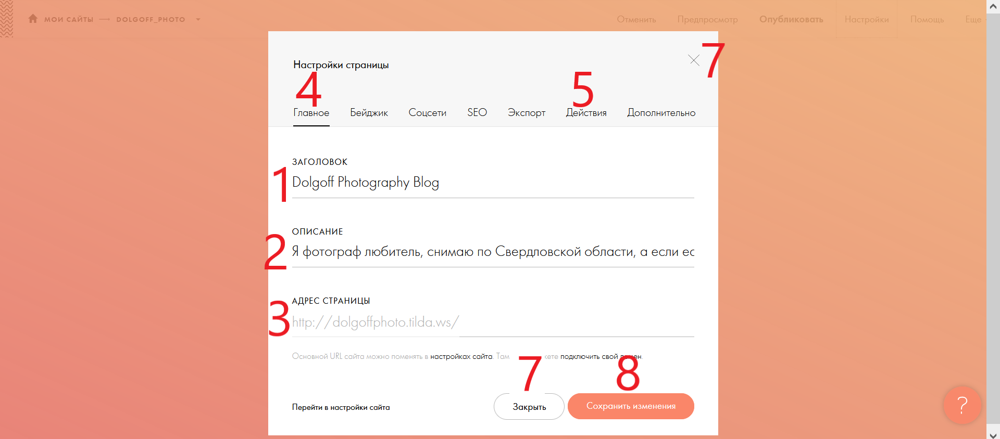
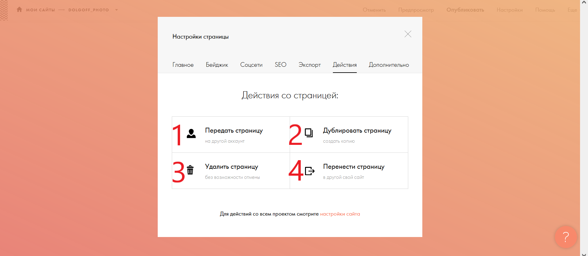

Настройки страницы

Кнопка (4) открывает это окно. Поле (1) задаёт имя вашего сайта в поисковике. Поле (2) заносит информацию под название сайта при поиске сайта в браузере. Поле (3) является адресом сайта,который нужно вводить в поисковой строке, что бы перейти на сайт, и его видели все остальные пользователи . Кнопка (5) открывает справочный центр. Кнопка (5) открывает окно дополнительных настроек(прокрутите ниже,что бы его увидеть). Кнопки (7) закрывают настройки без изменений. Кнопка (8) сохраняет изменения
Опубликование

Кнопка (1) позволяет передать страницу сайта на другой аккаунт. Кннопка (2) создаёт точную копию этой страницы. Кнопка (3) удаляет страницу без возможности её востановить. Кнопка (4) переносит страницу на другой сайт внутри аккаунта.